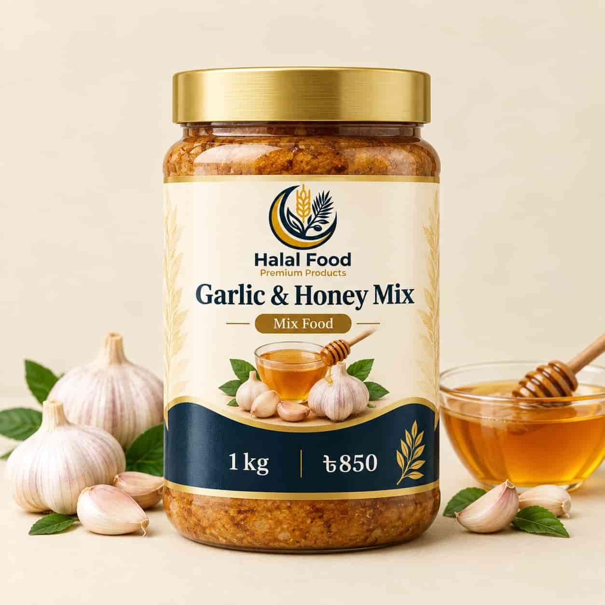

Blog / Mix Food
Garlic Honey Mix: Benefits, Safety and How to Use It

Garlic honey mix (roshun modhu) has become very popular in Bangladesh in the last few years. You will see it in videos, family tips and online shops, often with big promises. Some of these promises are true, some are exaggerated, and some are not safe to trust. In this guide, we explain what garlic honey mix is, what it can and cannot do, how to use it, how to make a fresh version safely for immediate use, and what to check when you buy a ready-made jar.
Quick answer: Garlic honey mix is a simple mix of garlic and honey. Many people enjoy it for its taste and as a traditional home remedy. It is not a medicine and it does not cure illness. It is safe for most healthy adults in ordinary food amounts, but it must never be given to babies under 12 months. Stored raw-garlic-and-honey mixtures also raise food-safety concerns, so do not rely on a homemade fermentation method unless it comes from a validated food-safety source.
What Is Garlic Honey Mix?
Garlic honey mix usually means garlic cloves combined with honey. In popular recipes, the garlic and honey are left together for days or weeks, allowing the garlic to flavour the honey. The result can be soft, sweet and pungent garlic cloves with a thin, strongly flavoured honey. Source: Cleveland Clinic.
Some people call this “fermented garlic honey,” because bubbles can appear as the mixture rests. But bubbles alone do not prove that a home-fermented jar is safe. Food-safety experts note that there is not enough research to establish a consistently safe home fermentation process for fermenting raw garlic in honey. Source: Ask Extension food-safety advice.
Why Do People Use It?
Garlic and honey both have a long history in home cooking and traditional remedies in many countries, including Bangladesh. People use garlic honey mix mostly:
- as a spoonful with food or as part of a morning routine
- as a flavouring in warm water or tea
- as a sweet and savoury addition to food
It is popular because it uses two common ingredients and has a distinctive flavour.
What Does Science Say?
Here is the honest answer. Both garlic and honey have health properties of their own, but fermented garlic honey does not have magical healing or preventive powers. It will not cure an illness, and it will not stop you from getting sick. Source: Cleveland Clinic.
You may see websites that say garlic honey prevents serious diseases or gives “science-backed” results. Be careful with these claims. Many do not name a real study, or they mix up results from lab tests with results in people. If a claim sounds too good to be true, it usually is.
What Can Garlic Honey Mix Realistically Offer?
- Taste. It gives a sweet, savoury and slightly sharp flavour that many people like.
- A small food habit. A small amount can be part of a meal or snack routine.
- A soothing drink. A little honey in warm water or tea can feel comforting when your throat is dry. This is comfort, not a cure.
- The ingredients in food form. Garlic is a common kitchen ingredient, and honey is a natural sweetener.
Treat garlic honey as food, not as a treatment. If you are sick, please seek advice from a qualified healthcare professional.
Safety First: Who Should Be Careful?
- Babies under 12 months must never eat honey. Honey is not safe for children under one year because of the risk of infant botulism. This applies to every kind of honey and every honey mix. Source: Cleveland Clinic.
- Botulism risk. Raw honey and garlic can both carry botulism-related risks. Combining raw garlic and honey and leaving it to ferment creates food-safety uncertainties. A university extension food-safety expert says there is not enough evidence to recommend a consistently safe home fermentation process for this mixture. Source: Ask Extension.
- Allergies. Avoid garlic honey if you are allergic to honey or garlic.
- Blood-thinning medicine or an upcoming surgery. Garlic can affect bleeding in some circumstances. If you take blood thinners or plan surgery, ask your doctor before using concentrated garlic remedies.
- Diabetes and high blood sugar. Honey is mostly sugar. One teaspoon contains roughly 6 g of sugar, so ask your healthcare professional before using it regularly.
- Sensitive stomach. Raw garlic can cause stomach upset or heartburn in some people. Stop using it if it causes symptoms.
- Pregnancy, breastfeeding or a health condition. Ask your healthcare professional before using it as a remedy rather than as an ordinary food ingredient.
How Much Should You Eat?
There is no proven medicinal dose for garlic honey mix. If you are a healthy adult who enjoys the flavour, keep the amount small and count the honey as added sugar. Taking more is not known to provide extra benefit. If you feel stomach pain, heartburn or signs of an allergy, stop and seek medical advice if needed.
Easy Ways to Use Garlic Honey Mix
- In warm water or tea: Stir a little honey into the drink after it has cooled slightly. For a garlic flavour, add freshly prepared cooked garlic separately.
- On bread, roti or paratha: Use a small amount as a flavouring with a meal.
- In salad dressing: Mix a little honey with lemon juice and olive oil; add fresh garlic just before serving.
- In marinades and sauces: A little honey and cooked garlic add flavour to chicken, vegetables or noodles.
- With soft garlic cloves: Use cooked garlic as part of a meal instead of relying on a stored raw garlic-honey ferment.
Very high heat changes the flavour of honey and garlic, so add honey near the end of cooking when appropriate.
How to Make a Fresh Garlic-Honey Flavour Mix at Home
Food-safety note: We do not recommend leaving raw garlic submerged in honey at room temperature to ferment. A 2026 university extension response says the safety of this home fermentation method has not been established, and warns about botulism risk. Refrigeration or the absence of visible mould does not prove that a ferment is safe. Read the food-safety guidance.
For a simple flavour mix without long-term fermentation:
- Wash your hands and use a clean bowl and spoon.
- Cook or roast a small amount of garlic until soft, then let it cool.
- Mix only the amount of honey you plan to use immediately with the cooked garlic.
- Use it as a sauce or topping with a meal. Do not leave the mixture sitting at room temperature or store it as a ferment.
- Discard any leftover mixture rather than saving it for later.
Never taste a questionable jar to check whether it is safe. Botulism toxin cannot reliably be detected by smell, taste or appearance. If a stored mixture looks unusual, is leaking, swollen, or smells off, discard it without tasting; when in doubt, do not consume it.
How to Choose a Ready-Made Garlic Honey Mix
- Ingredients: Read the list and be cautious of added sugar syrup or unclear ingredients.
- Honey quality: A seller who is open about the type and source of the honey is more trustworthy. You can read our guide to wild forest honey for tips on checking honey.
- Clean, sealed packing: Check that the lid is intact and the jar is clean.
- Dates and storage: Look for a packing date, use-by information and clear storage instructions.
- Honest claims: Avoid sellers who say the mix cures diseases. A trustworthy seller presents it as food, not medicine.
- Fair price: Real honey generally costs more than sugar syrup, so an unusually low price is a reason to ask questions.
How to Store Garlic Honey Mix
For homemade fresh garlic-and-honey flavouring, prepare only what you will use immediately and do not store it for fermentation. For a ready-made product, follow the manufacturer's storage instructions and use-by date. Keep the container closed, use a clean, dry spoon, and do not assume that refrigeration or a normal smell makes an uncertain homemade ferment safe. Honey can turn thick or grainy over time; crystallisation alone does not mean pure honey has spoiled. General background: Cleveland Clinic.
Frequently Asked Questions
What is garlic honey mix good for?
It is a tasty food and a traditional home habit. It does not cure disease. Think of it as a flavouring, not as medicine.
How much garlic honey can I take in a day?
There is no proven medicinal dose. Keep the portion small, remember that honey adds sugar, and seek medical advice if you have a condition that affects your diet.
Is garlic honey safe for children?
Never give honey to babies under 12 months. For older children, ask a healthcare professional before using garlic honey as a remedy and ensure any food is suitable for the child's age.
Does garlic honey have side effects?
Some people experience stomach upset, heartburn or bad breath. Allergies are possible. People taking blood thinners or managing diabetes should ask a doctor before using it regularly.
How long does garlic honey last?
Follow the manufacturer's storage instructions for ready-made products. For a homemade mixture, we recommend making only what you will use immediately, rather than storing raw garlic in honey to ferment, because there is no established research-based home process that can consistently guarantee safety.
Can I buy garlic honey mix online in Bangladesh?
Yes. You can browse the Halal Food Mix Food collection and check the current product details before ordering.
Final Thoughts
Garlic honey mix is a simple flavour combination with a long tradition, but it is not a medicine and it needs sensible food handling. Keep portions small, never give honey to babies under 12 months, avoid unsupported health claims, and be careful with stored homemade garlic-honey ferments. For the safest homemade option, combine a little honey with cooked garlic just before serving, and buy ready-made products from sellers who provide clear ingredients and storage information.
Ready to order? Visit our Mix Food collection or our Honey collection.